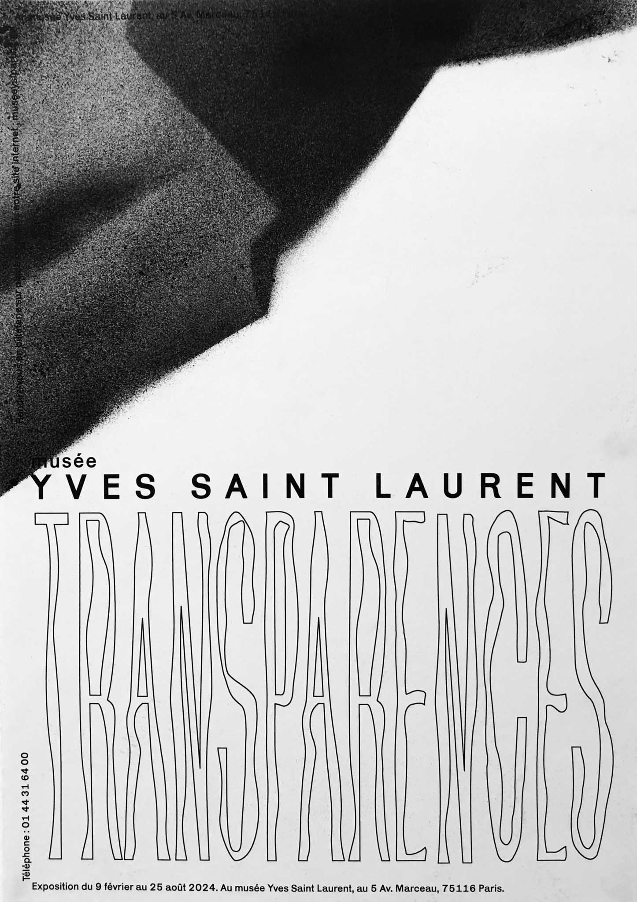
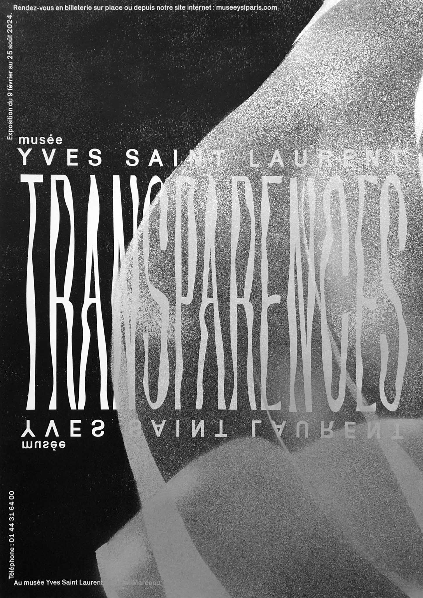
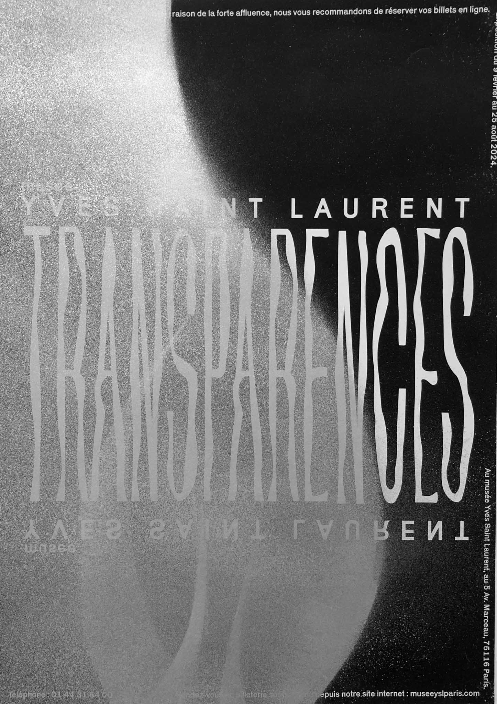
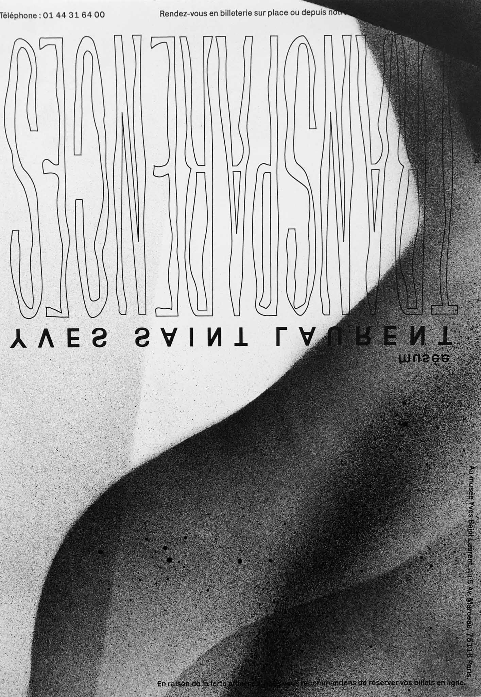

À l’issue de l'exposition "Transparences" au Musée Yves Saint Laurent, j’ai crée 4 affiches autour de la fluidité et la transparence des tissus.
J’ai retravaillé la typographie manuellement, utilisé différents pochoirs pour ensuite bomber à la peinture.
Bombe de peinture noire et argentée, format A3



